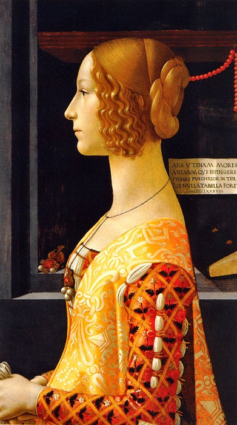
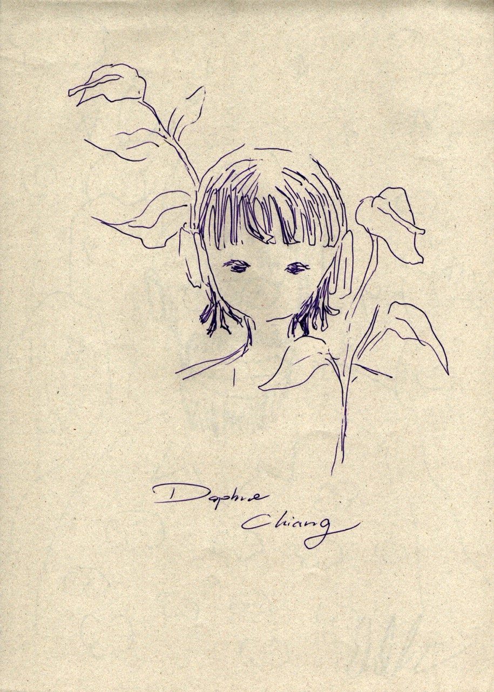
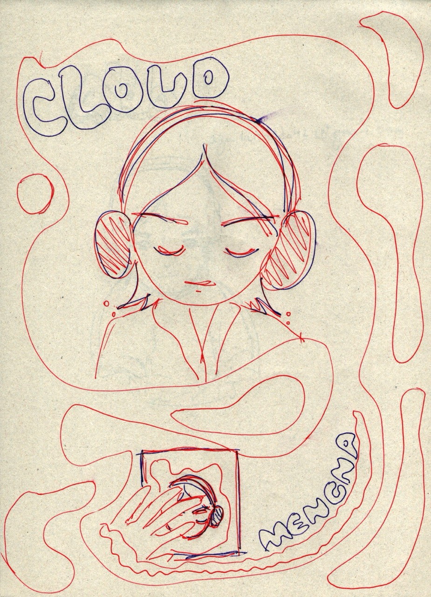
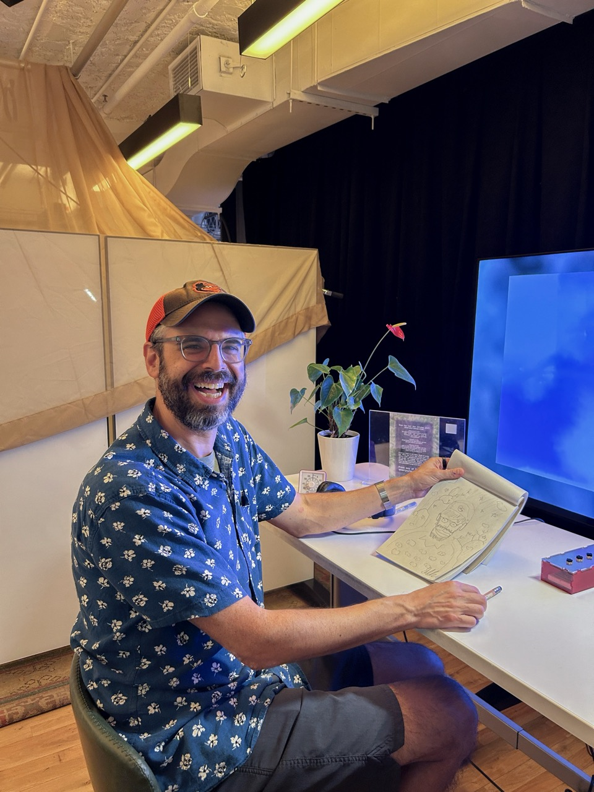
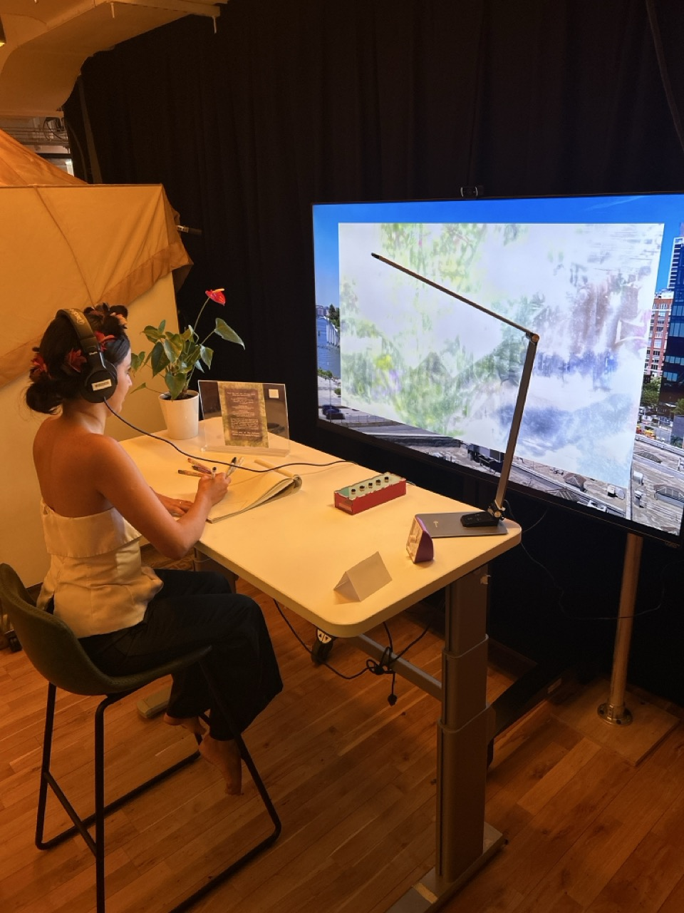
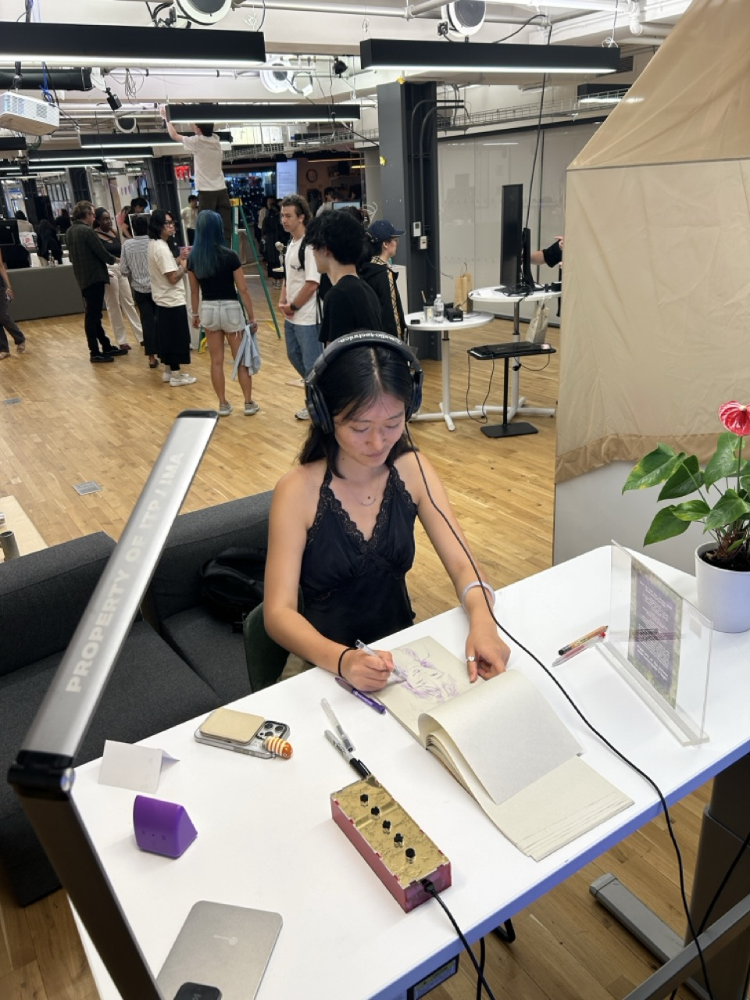
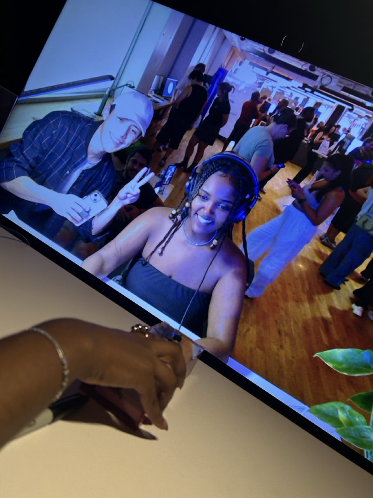
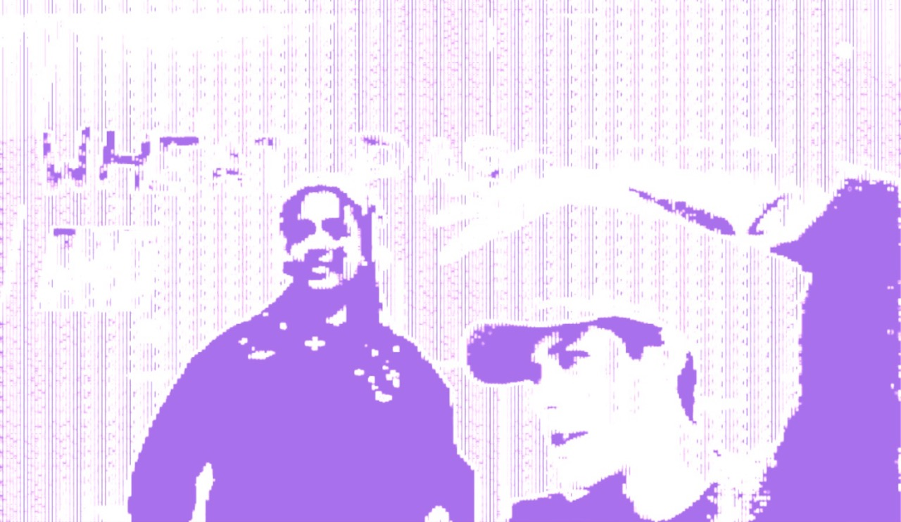
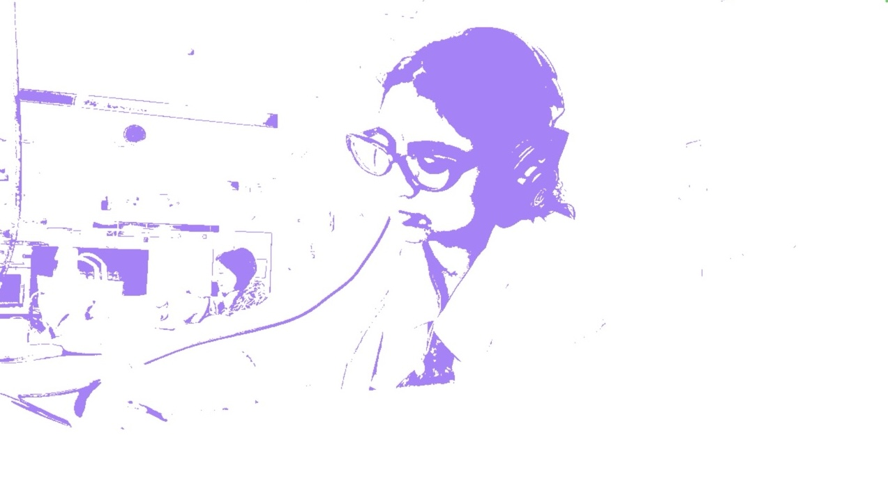

DtMD (I Should Have Made More Drawings) is an interactive installation about reconnecting with attention through drawing. Taking photos (and doing it for the ‘gram or the algorithm) has become a way of consuming reality: we capture what we don’t want to forget, but rarely pause to truly attend to it now. Drawing, on the other hand, slows us down and demands presence. That’s why I created a space for drawing the one subject that most often escapes our attention: ourselves. A self-portrait becomes a practice of attention and self-knowledge. From distraction to intention, we choose what to look at and what to ignore, until attention finally settles into stillness. We then become open, detached and ready for our essence to shine through.
The portrait of Giovanna Tournabuoni by Ghirlandaio bears the following inscription: “Art, could you only represent [effingere: render and produce, express and execute, draw out and fashion] character and spirit, there would be no more beautiful painting on earth.
Create a drawing session to cultivate attention and intentional seeing. To do this, the experience begins with an invitation to sit at a table, choose a drawing instrument and a blank page from the sketchbook, and face a digital mirror on screen. The mirror’s image of the participant will shift and transform across three phases. In the first, the reflection is heavily distorted, making it nearly impossible to create an accurate self-portrait. In the second phase, the distortion disappears, and the image is shown clearly, just as the camera perceives it, allowing greater clarity and the possibility of finding a way forward in drawing oneself. In the third phase, the image is manipulated again, this time through simplification and abstraction effects to produce a pared-down image that emphasizes edges, contrast, and structure, making the drawing more accessible.
Throughout the process, the participant can press a button on the device to receive audio prompts that gently guide their attention. At the end, the audience will have created a self-portrait that embodies the process of paying attention: moving from distraction, confusion, and visual overload to a state of presence, awareness, and intentional seeing. The shifting images in the mirror represent the quieting of the mind that is necessary to truly attend to the world and to perceive its truth, hidden in plain sight. The finished drawing stands as a visual record of this inner journey, from mental clutter to focus, from scatterbrain to conscious attention.
The TouchDesigner network captures the subject’s image through a webcam using a Video Device In TOP and transforms it into a three-phase drawing experience for drawing their self-portrait. In the first phase, the video feed is altered with distortion TOPs and CHOPs such as Feedback, Texture 3D, Bloom, Level, and Blur that fragment, break apart, and obscure facial features, making them difficult to recognize. In the second phase, the image appears unaltered, offering a moment of full clarity to observe oneself without interference. In the third phase, the image is simplified and abstracted through effects like Threshold, Blur, and Solarization approaches that reduce detail and emphasize edges, contrast, and overall structure, making it easier to translate into a drawing.

The interaction is controlled through a custom device built with Arduino, fitted with five buttons. Four buttons switch between the different visual effects and audio prompts, and one resets the video sequence. When a button is pressed, the Arduino sends a signal through a Serial DAT in TouchDesigner. This data is translated into variables (values from 1 to 5) that feed into a DAT to CHOP conversion. From there, a CHOP Execute DAT script routes those values to Switch TOPs that select the active effect in real time. The selection logic is also influenced by an LFO CHOP, whose range is remapped from -1 to 1 into 0 to 5 using Math CHOPs, creating four main timing segments: one for the initial distorted phase, one for the clear phase, and three combined for the extended simplified phase. This ensures that participants have more time to draw during the final, more accessible image.
In addition to controlling the visual sequence, the button inputs also trigger background audio guidance prompts. This is done by connecting the same CHOP values that drive the Switch TOPs to audio operators. Audio Device In CHOPs handle the sound routing, and Trigger CHOPs are used to play the audio prompts when a new effect is selected. This parallel connection between visual and audio control creates a synchronized experience where each visual change is accompanied by a relevant sound cue.

To merge the participant’s manipulated video with my own footage of New York’s urban and natural scenes, I used Transform TOPs and Composite TOPs to layer the two sources (placing the live, altered feed on top, and the background video beneath). This layering gives the drawing environment both a personal and environmental context. Through building this system, I learned to integrate multiple node types, TOPs for visual manipulation, CHOPs for timing and logic control, and DATs for external device input, into a coherent sequence where every operator’s output directly informs the next, resulting in a unified, interactive installation.
The presentation lasted for two hours in which twenty participants sat down and drew their self-portraits. Almost nobody read the instructions, because they weren’t visible enough and it was too much text for the users to engage. However, with a little guidance and direction from my part all of them understood what was expected of them and started the drawing experience.
All of the users expressed enjoyment from drawing and having a quiet time to just sit, draw and tune out the world outside. They felt confident using the sketchpad and the drawing instruments and some of them even used more than one during the drawing session, mixing pencil with gel ballpoint pens, for example.
The users used the button box as expected, but some didn’t noticed that they could cycle through all of the video effects and audio prompts continuously and missed the chance to see their image in the many different ways the installation was set up for. Still, all of them were curious about the image alteration on screen and tried to capture what they saw on paper through wiggles, hatching, and even words.
Overall, the twenty self-portraits collected show a diverse array of people, each with their unique style and character. The drawings reveal how the participant saw themselves at that particular moment, with the aid (or hindrance) of the video effects and audio prompts. None of the drawings could be said to be realistic or a faithful depiction of the appearance of the participants. However, that was never the goal, since, as some of them noticed, when presented with a distorted or abstracted reflection they resorted to seeing more attentively and discover the profound and essential features of themselves to record on paper without concern of detail or perfection.
This project began as a gift for Junya-Li and grew into a folder full of drawings and self-portraits created by my classmates and instructors from @imalowresnyu at @nyutisch. I owe the spark and impulse of that first gift to Beth, the guidance during development to Craig, Patrick, and Ellen, and the technical (and at times emotional) support to Robi, Shimmy, and Brian. I’m also deeply grateful to my classmates, whose skills and generosity enriched the project in countless ways. Especially Alex and Katie, who lent their voices to record the audio prompts, making the experience softer, more inviting, and more human. The soothing drone music you hear in the background is also a piece made by Katie.
As an interactive work that relied on participants’ drawings, I’m deeply grateful to everyone who playtested with me and took the time to sit, draw for four minutes, and press buttons that altered your recorded image. It was a strange request, but you embraced it with patience and attention. That generosity made the project possible.
